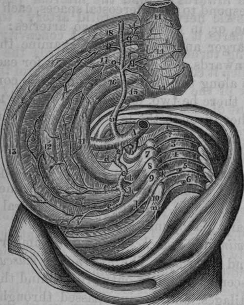

The Internal Mammary Artery
Description
This section is from the book "Anatomy Of The Arteries Of The Human Body", by John Hatch Power. Also available from Amazon: Anatomy of the Arteries of the Human Body, with the Descriptive Anatomy of the Heart.
The Internal Mammary Artery
In order to expose the trunk of this artery, it is only necessary to cut through and remove the costal cartilages and intercostal muscles which cover it, and to saw through the clavicle or disarticulate it from the sternum: it is then easy to follow its external and terminating branches, and the internal may be examined after opening the thorax.
This vessel arises from the subclavian opposite to the origin of the thyroid axis, and therefore close to the internal margin of the scalenus anticus muscle. It descends obliquely forwards and inwards, lying near the inner margin of the scalenus anticus muscle, covered by the vena innominata and sterno-cleido-mastoid muscle, and nearly parallel to the phrenic nerve which, in the first instance, lies close to its outer side. It then descends into the thorax between the pleura and costal cartilages, being separated from the latter by the phrenic nerve crossing in front of it from without inwards. Lower down the internal mammary artery descends between the triangularis sterni muscle, which separates it from the pleura, and the costal cartilages and internal intercostal muscles, which lie in front of it. Having arrived at the cartilage of the seventh rib, it terminates by dividing into an internal and external branch. In this course it is about a finger's breadth distant from the sternum. From its origin to the cartilage of the third rib it is inclined inwards, but in the rest of its course its direction is outwards. Its branches are classed into the following :—
Internal. Thymic. Glandular. Muscular. Mediastinal. Comes Nervi Phrenici.
External. Anterior Intercostal.
Terminating. Musculo-phrenic. Abdominal.
The Internal Branches
The Internal Branches are distributed, as their names imply, to the thymus gland, to the adjacent lymphatic glands, to the sterno-hyoid and sterno-thyroid muscles, and to the areolar tissue of the anterior mediastinum and pericardium. The anterior mediastinal artery is occasionally a direct branch from the arch of the aorta. A remarkable and constant internal branch, termed the comes nervi phrenici, accompanies the phrenic nerve in a tortuous manner, giving branches as it descends to the thymus gland and mediastinum, to the pericardium, pulmonary veins, and internal surface of the lung; after which its terminating branches are lost in supplying the diaphragm and in anastomosing with the subphrenic branches of the abdominal aorta.
The External Branches
The External Branches, called also the anterior intercostal, correspond to the intercostal spaces, each of which receives one, or, in some cases, two arteries: they will be found larger and longer as we examine them from above downwards. When there is one for each space, it proceeds along the inferior margin of the corresponding rib: if there be two, one passes through the upper and the other through the lower part of the intercostal space. In all cases they supply the intercostal muscles, and communicate with the terminating branches of the superior intercostal artery and with the proper intercostal arteries from the thoracic aorta: some of them pierce these muscles, and supply the pectoral muscles, the mammary gland, and the integuments.
The Terminating Branches
The Terminating Branches are two in number; viz., an external and internal. The external or musculo-phrenic branch descends obliquely outwards, behind the inferior costal cartilages, and, having passed through the diaphragm, into which it sends some branches, it terminates in supplying the transverse and oblique muscles of the abdomen, and in communicating with the cir-cumflexae ilii, lumbar, and inferior intercostal arteries. The internal terminating branch, called also the abdominal branch, communicates with that of the opposite side at the ensiform cartilage of the sternum, and then descends between the posterior surface of the rectus muscle and its sheath. After sending some branches to this muscle, and others that pierce its sheath to arrive at the broad muscles of the abdomen, it divides near the umbilicus into several branches which anastomose with the epigastric artery. This anastomosis was at one time supposed to be the cause of the sympathy between the mammary gland and the uterus.
Fig. 22. Part of the course of the Internal Mammary and the Superior Intercostal Arteries.
1, Seventh Cervical Vertebra. 2,3,4,5,6, The Upper Dorsal Vertebrae. 7, First Rib. 8, Second Rib. 9, Third Rib. 10, Fourth Rib. 11, Twig from Superior Branch of Intercostal Artery. 12, Anastomoses between the Anterior Intercostal from the Internal Mammary and the Superior Intercostal Artery : Internal Intercostal Muscles removed. 13. Third Rib. 14, 14, 14, Sternum, with the Anastomoses between the Mediastinal Branches of the Internal Mammary Artery. 15, Clavicle. 16, 17, 18, Costal Cartilages. A, Subclavian Artery. K, First Inferior or Aortic Intercostal Artery. P, Second Anterior Intercostal Artery from Internal Mammary, b, Vertebral Artery, c, A common trunk which in this case gave origin to the Cervicalis Profunda and Superior Intercostal Arteries. d, Cervicalis Profunda Artery, e. Superior Intercostal Artery, f, Intercostal Arteries from the Superior Iutercostal. h, h, Dorsal Branches of Superior Intercostal Artery, i, Anastomosis between first Aortic .Intercostal and second Intercostal Branch of Superior Intercostal. 1. Superior Branch of Aortic Intercostal, m, Second Aortic Intercostal Artery, n. Internal Mammary Artery, o, First Intercostal Branch of Internal Mammary Artery, q, q, Internal Branches of Internal Mammary Artery.
Continue to: